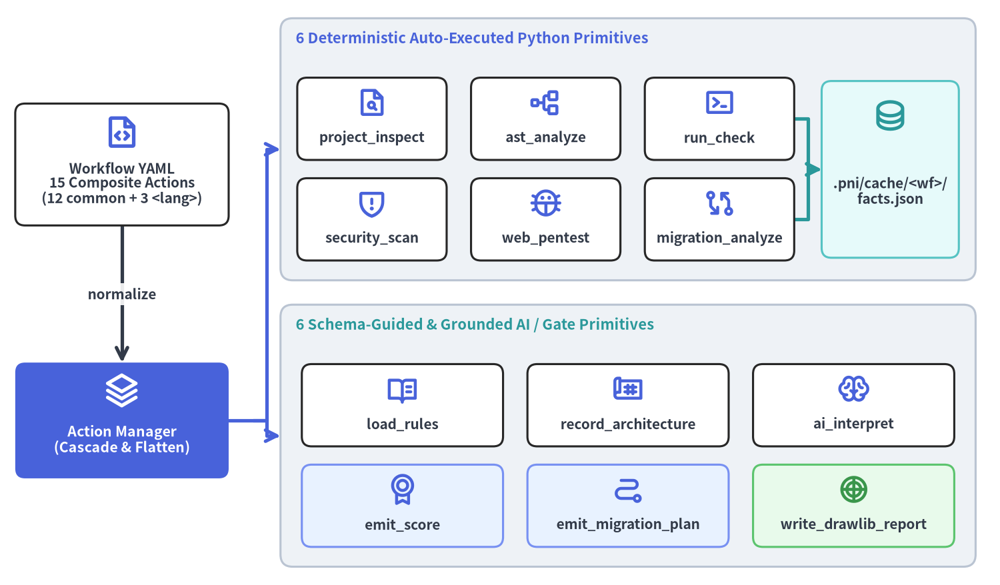
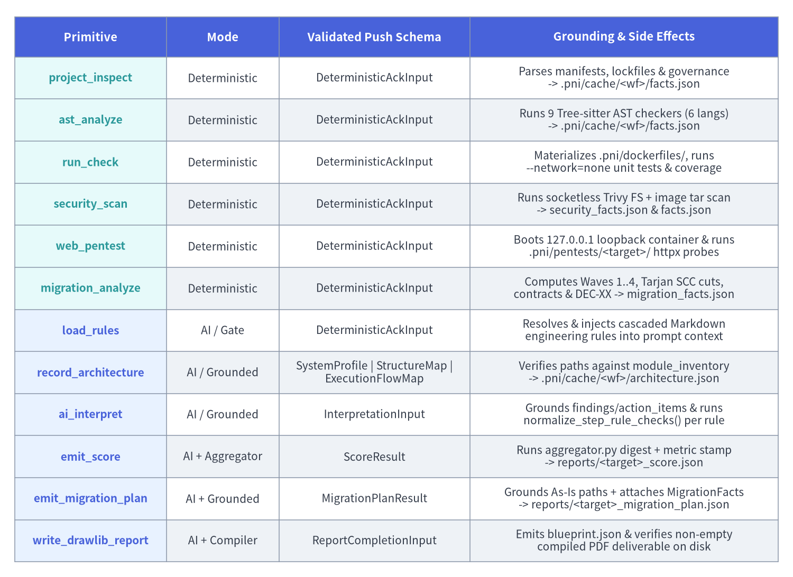

15 アクションと 12 プリミティブ: 2層アクションパイプライン
コード行数や複雑度、依存パッケージのバージョン、単体テスト通過率、CVE 件数、リファクタリングの影響範囲に対する LLM の憶測（ハルシネーション）を排除するため、pni501 は宣言的なワークフロー定義と実行メカニズムを分離しています。対応する 6 言語（Python、Java、PHP、Go、TypeScript、JavaScript）のそれぞれにおいて、ワークフローは 15 個の標準複合 YAML アクション（common/ の汎用アクション 12 個 + <lang>/ の言語別アクション 3 個）を組み合わせ、それらを 12 個の正規 PrimitiveType ステップ（自動実行される Python 解析器 6 個 + スキーマ検証・リポジトリ実在確認付き AI/ゲートプリミティブ 6 個）へとフラットに展開します。

Source Code
from drawlib.canvas import save, setup
from drawlib.diagrams.architecture import ArchitectureDiagram, Node, NodeGroup, PhosphorIcon
from drawlib.styles import Styles
setup(width=164, height=96, dpi=150)
diag = ArchitectureDiagram(
node_style=Styles.PrimaryBold,
node_text_style=Styles.DarkBold.patch(text_size=10.0),
edge_style=Styles.DarkBold,
edge_text_style=Styles.DarkBold.patch(text_size=10.0),
node_card_style=Styles.WhiteBordered.patch(shape_r=1.6),
)
wf_node = diag.add(
Node(
"Workflow YAML\n15 Composite Actions\n(12 common + 3 <lang>)",
width=35.0,
height=20.0,
icon=PhosphorIcon.FILE_CODE,
icon_size=6.0,
),
xy=(20.0, 69.0),
)
mgr_node = diag.add(
Node(
"Action Manager\n(Cascade & Flatten)",
width=35.0,
height=19.0,
icon=PhosphorIcon.STACK,
icon_size=6.0,
style=Styles.WhiteBold,
text_style=Styles.WhiteBold.patch(text_size=10.2),
card_style=Styles.PrimaryFlat.patch(shape_r=1.6),
),
xy=(20.0, 27.0),
)
det_group = diag.add(
NodeGroup(
title="6 Deterministic Auto-Executed Python Primitives",
width=114.0,
height=43.0,
style=Styles.Neutral.patch(shape_r=2.0),
text_style=Styles.PrimaryBold.patch(text_size=10.5, halign="left", valign="top"),
),
xy=(46.0, 50.0),
)
d1 = det_group.add(
Node("project_inspect", width=24.5, height=13.5, icon=PhosphorIcon.FILE_MAGNIFYING_GLASS, icon_size=5.2),
xy=(15.0, 26.5),
)
d2 = det_group.add(
Node("ast_analyze", width=24.5, height=13.5, icon=PhosphorIcon.TREE_STRUCTURE, icon_size=5.2),
xy=(43.5, 26.5),
)
d3 = det_group.add(
Node("run_check", width=24.5, height=13.5, icon=PhosphorIcon.TERMINAL_WINDOW, icon_size=5.2),
xy=(72.0, 26.5),
)
d4 = det_group.add(
Node("security_scan", width=24.5, height=13.5, icon=PhosphorIcon.SHIELD_WARNING, icon_size=5.2),
xy=(15.0, 10.0),
)
d5 = det_group.add(
Node("web_pentest", width=24.5, height=13.5, icon=PhosphorIcon.BUG, icon_size=5.2),
xy=(43.5, 10.0),
)
d6 = det_group.add(
Node("migration_analyze", width=24.5, height=13.5, icon=PhosphorIcon.GIT_DIFF, icon_size=5.2),
xy=(72.0, 10.0),
)
facts_node = det_group.add(
Node(
".pni/cache/<wf>/\nfacts.json",
width=22.5,
height=29.0,
icon=PhosphorIcon.DATABASE,
icon_size=5.8,
style=Styles.SecondaryBold,
card_style=Styles.SecondaryNeutral.patch(shape_r=1.6),
),
xy=(100.0, 18.2),
)
ai_group = diag.add(
NodeGroup(
title="6 Schema-Guided & Grounded AI / Gate Primitives",
width=114.0,
height=43.0,
style=Styles.Neutral.patch(shape_r=2.0),
text_style=Styles.SecondaryBold.patch(text_size=10.5, halign="left", valign="top"),
),
xy=(46.0, 3.0),
)
a1 = ai_group.add(
Node("load_rules", width=33.0, height=13.5, icon=PhosphorIcon.BOOK_OPEN_TEXT, icon_size=5.2),
xy=(20.0, 26.5),
)
a2 = ai_group.add(
Node("record_architecture", width=33.0, height=13.5, icon=PhosphorIcon.BLUEPRINT, icon_size=5.2),
xy=(57.0, 26.5),
)
a3 = ai_group.add(
Node("ai_interpret", width=33.0, height=13.5, icon=PhosphorIcon.BRAIN, icon_size=5.2),
xy=(94.0, 26.5),
)
a4 = ai_group.add(
Node(
"emit_score",
width=33.0,
height=13.5,
icon=PhosphorIcon.MEDAL,
icon_size=5.2,
style=Styles.PrimaryBold,
card_style=Styles.PrimaryNeutral.patch(shape_r=1.6),
),
xy=(20.0, 10.0),
)
a5 = ai_group.add(
Node(
"emit_migration_plan",
width=33.0,
height=13.5,
icon=PhosphorIcon.PATH,
icon_size=5.2,
style=Styles.PrimaryBold,
card_style=Styles.PrimaryNeutral.patch(shape_r=1.6),
),
xy=(57.0, 10.0),
)
a6 = ai_group.add(
Node(
"write_drawlib_report",
width=33.0,
height=13.5,
icon=PhosphorIcon.CHART_POLAR,
icon_size=5.2,
style=Styles.SuccessBold,
card_style=Styles.SuccessNeutral.patch(shape_r=1.6),
),
xy=(94.0, 10.0),
)
diag.connect(wf_node, mgr_node, label="normalize", routing="orthogonal")
mgr_node.fork([det_group, ai_group], at_x=41.5, style=Styles.PrimaryBold)
diag.connect(d3, facts_node, routing="orthogonal", style=Styles.SecondaryBold)
diag.connect(d6, facts_node, routing="orthogonal", style=Styles.SecondaryBold)
diag.draw(xy=(0.0, 0.0))
save()
1. 2層アクション展開 (15 複合アクション -> 12 プリミティブ)
.pni/workflows/*.yaml（WorkflowDefinition）の記述が簡潔に保たれるのは、src/pni/_actions/base_model.py が再利用可能なドメイン監査バンドルと低レベルの実行ステップを分離しているためです。
- Tier 1 — 複合アクション (
CompositeActionDefinition):uses: <action_id>で呼び出されるドメイン特化型の YAML 仕様です。デフォルトのエンジニアリングrules、順序付けられたCompositePrimitiveSpecリスト、デフォルトのwithパラメータ、およびドメイン固有のプロンプト指示をバンドルします。 - Tier 2 — 正規プリミティブ (
PrimitiveStep&PrimitiveType): 複合 YAML の内部、またはワークフローステップのaction: <primitive_type>で直接参照される12個のコア実行プリミティブです。ステートフル実行と単発のrun-actionはすべて、フラットに展開されたPrimitiveStepインスタンス上で動作します。
1.1 言語あたり 15 個の標準複合アクション一覧 (01 〜 15)
対象言語（python, java, php, go, typescript, javascript）ごとに、src/pni/_actions/ は 15 個の標準複合 YAML アクション（common/ の汎用アクション 12 個 + <lang>/ の言語固有アクション 3 個）を提供します。
| ステージ | 複合 uses: ID |
スコープ | 展開される PrimitiveType シーケンス |
デフォルト適用ルールと役割 |
|---|---|---|---|---|
01 |
repo_structure_audit(01_project_inspect) |
<lang>/ |
project_inspect -> ai_interpret |
<lang>/dependencies, common/supply_chain, common/documentation, common/git_hygiene, common/security |
02 |
architecture_analysis(02_architecture) |
common/ |
record_architecture (×3: purpose_and_stack, layers_and_modules, flows_and_state) |
common/architecture — 実在パス検証付きの 3 側面システム理解を architecture.json に保存 |
03 |
<lang>_ast_audit(03_ast_quality) |
<lang>/ |
ast_analyze -> ai_interpret |
<lang>/code_quality, <lang>/typing, <lang>/modernization および検出フレームワークルール |
04 |
<lang>_test_audit(04_test_suite) |
<lang>/ |
ai_interpret (AstFacts を参照) |
<lang>/testing — テスト分離、ミラーディレクトリ構成、アサーション密度を評価 |
05 |
supply_chain_audit(05_supply_chain) |
common/ |
ai_interpret (ProjectFacts を参照) |
common/supply_chain, common/git_hygiene, common/security — OpenSSF & CI/CD ガバナンス監査 |
06 |
library_hygiene_audit(06_library_hygiene) |
common/ |
ai_interpret |
common/library_hygiene, common/documentation — SemVer 公開 API 境界と最小依存関係の評価 |
07 |
cli_guidelines_audit(07_cli_guidelines) |
common/ |
ai_interpret |
common/cli_guidelines, common/error_handling — Clig.dev 操作性、--help、終了コード規約 |
08 |
service_readiness_audit(08_service_readiness) |
common/ |
ai_interpret |
common/twelve_factor, common/production_readiness, common/observability, common/resilience |
09 |
container_runtime_audit(09_runtime_check) |
common/ |
run_check -> ai_interpret |
common/container_hygiene, common/production_readiness — --network=none テスト実行と起動プローブ |
10 |
security_vulnerability_audit(10_security_scan) |
common/ |
security_scan -> ai_interpret |
common/security, common/supply_chain, common/container_hygiene — ソケットレス Trivy FS + イメージ tar スキャン |
11 |
web_penetration_audit(11_web_pentest) |
common/ |
web_pentest -> ai_interpret |
common/security, common/resilience — ループバックコンテナ起動 + ライブ httpx セキュリティプローブ |
12 |
emit_score(12_emit_score) |
common/ |
emit_score |
指摘統合、ホットスポット算出、ルール準拠スタンプを行い reports/<target>_score.json を出力 |
13 |
write_drawlib_report(13_audit_report) |
common/ |
write_drawlib_report (report_kind: audit) |
common/reporting — blueprint.json を生成し、7章構成 A4 PDF 監査レポートを検証 |
14 |
migration_proposal(14_migration_plan) |
common/ |
migration_analyze -> ai_interpret -> emit_migration_plan |
common/migration_planning, common/architecture — Wave 1..4、Tarjan SCC 切断、*_migration_plan.json 出力 |
15 |
write_migration_report(15_migration_report) |
common/ |
write_drawlib_report (report_kind: migration) |
common/reporting, common/migration_planning — 7章構成マイグレーション A4 PDF レポートをコンパイル |
進捗トラッキング拡張 (
category: progress): 上記 15 個の標準監査・マイグレーションアクションに加え、common/にはベースライン監査およびマイグレーション計画に対する複数スプリントの改修進捗（Delta）を測定するprogress_assessment（progress_analyze->ai_interpret->emit_progress）およびwrite_progress_report（report_kind: progress）も用意されています。
1.2 3層カスケードとパラメータ統合 (_actions/manager.py)
normalize_workflow_steps() がワークフローを展開する際、expand_composite_action() は local (.pni/actions/) > <active_lang>/ > common/ の優先順で uses: を解決し、3 つの設定レイヤーをマージします。
- パラメータ (
params): ワークフローレベルのターゲット/出力パス（workflow_id,target_root,source_targets,test_targets,doc_targets,facts_path,score_path,output_dir）がワークフローステップのwith:ブロックと統合され、プリミティブ側のデフォルトwith:（{**prim.with_params, **override_params}）を上書きします。 - ルール (
rules): 複合アクションのルール、ワークフローステップの追加rules:、およびプリミティブ固有のルールが宣言順に連結・重複排除（dict.fromkeys）されます。 - 由来追跡 ID (
Provenance IDs): ワークフローステップのprompt:上書きはベースプロンプトの末尾に追記され、SQLite が連番のact-01,act-02を割り当てる前にsource_action=comp.idを持つ複合ステップ ID（{step_id}__{idx}_{prim.type.value}）を生成します。
id: web_penetration_audit
name: Live Web Application Penetration Testing Audit
description: Starts the target web service in an isolated loopback container and executes Python + httpx security probes.
rules:
- common/security
- common/resilience
primitives:
- type: web_pentest
name: Execute Live Web Penetration Test Suite
with:
pentest_timeout_sec: 180
- type: ai_interpret
name: Evaluate Live Penetration Test Findings & Attack Surface
prompt: |
Review PentestFacts (discovered endpoints, failed security probes, CWE tags, and HTTP evidence).
Cross-reference with AST dangerous_sinks and api_endpoints to prioritize P0-P2 remediations.
2. 12 個の正規プリミティブ完全カタログ
src/pni/_actions/ai_actions.py および src/pni/_workflows/engine.py において、すべての get-action プロンプトは get_expected_input_schema_json() を注入し、すべての push-action 呼び出しは Pydantic v2 スキーマ構造とリポジトリパスの実在性（_verify_grounded_paths() により、ディスク上および AstFacts.module_inventory に存在しないファイル/モジュールパスを拒否）の両方を検証します。

Source Code
from drawlib.canvas import save, setup
from drawlib.smartarts import Table
from drawlib.styles import Styles
setup(width=162, height=118, dpi=150)
headers_and_rows = [
["Primitive", "Mode", "Validated Push Schema", "Grounding & Side Effects"],
[
"project_inspect",
"Deterministic",
"DeterministicAckInput",
"Parses manifests, lockfiles & governance\n-> .pni/cache/<wf>/facts.json",
],
[
"ast_analyze",
"Deterministic",
"DeterministicAckInput",
"Runs 9 Tree-sitter AST checkers (6 langs)\n-> .pni/cache/<wf>/facts.json",
],
[
"run_check",
"Deterministic",
"DeterministicAckInput",
"Materializes .pni/dockerfiles/, runs\n--network=none unit tests & coverage",
],
[
"security_scan",
"Deterministic",
"DeterministicAckInput",
"Runs socketless Trivy FS + image tar scan\n-> security_facts.json & facts.json",
],
[
"web_pentest",
"Deterministic",
"DeterministicAckInput",
"Boots 127.0.0.1 loopback container & runs\n.pni/pentests/<target>/ httpx probes",
],
[
"migration_analyze",
"Deterministic",
"DeterministicAckInput",
"Computes Waves 1..4, Tarjan SCC cuts,\ncontracts & DEC-XX -> migration_facts.json",
],
[
"load_rules",
"AI / Gate",
"DeterministicAckInput",
"Resolves & injects cascaded Markdown\nengineering rules into prompt context",
],
[
"record_architecture",
"AI / Grounded",
"SystemProfile | StructureMap |\nExecutionFlowMap",
"Verifies paths against module_inventory\n-> .pni/cache/<wf>/architecture.json",
],
[
"ai_interpret",
"AI / Grounded",
"InterpretationInput",
"Grounds findings/action_items & runs\nnormalize_step_rule_checks() per rule",
],
[
"emit_score",
"AI + Aggregator",
"ScoreResult",
"Runs aggregator.py digest + metric stamp\n-> reports/<target>_score.json",
],
[
"emit_migration_plan",
"AI + Grounded",
"MigrationPlanResult",
"Grounds As-Is paths + attaches MigrationFacts\n-> reports/<target>_migration_plan.json",
],
[
"write_drawlib_report",
"AI + Compiler",
"ReportCompletionInput",
"Emits blueprint.json & verifies non-empty\ncompiled PDF deliverable on disk",
],
]
tbl = Table(
cell_style=Styles.White,
text_style=Styles.Dark.patch(text_size=10.0),
header_cell_style=Styles.PrimaryFlat,
header_text_style=Styles.WhiteBold.patch(text_size=10.5),
border_style=Styles.MutedThin,
has_header=True,
)
tbl.set_style_cell_evenodd(
even_color=Styles.Neutral.shape_fill_color,
even_text_style=Styles.Dark.patch(text_size=10.0),
odd_color=Styles.White.shape_fill_color,
odd_text_style=Styles.Dark.patch(text_size=10.0),
)
tbl.set_style_cell(
background_color=Styles.PrimaryFlat.shape_fill_color,
text_style=Styles.WhiteBold.patch(text_size=10.5),
rows=[0],
)
tbl.set_style_cell(
background_color=Styles.SecondaryNeutral.shape_fill_color,
text_style=Styles.SecondaryBold.patch(text_size=10.0),
rows=[1, 2, 3, 4, 5, 6],
columns=[0],
)
tbl.set_style_cell(
background_color=Styles.PrimaryNeutral.shape_fill_color,
text_style=Styles.PrimaryBold.patch(text_size=10.0),
rows=[7, 8, 9, 10, 11, 12],
columns=[0],
)
col_widths = [31.0, 23.0, 39.0, 63.0]
row_heights = [8.2] + [8.6] * 12
tbl.draw_flexible(
xy=(3.0, 114.5),
column_widths=col_widths,
row_heights=row_heights,
data=headers_and_rows,
align="top_left",
)
save()
2.1 決定論的自動実行と WorkflowFactsBundle の永続化
pni workflows get-action（または push-action）が 6 個の決定論的プリミティブ（project_inspect, ast_analyze, run_check, security_scan, web_pentest, migration_analyze）のいずれかに到達すると、_execute_deterministic_step_if_needed() が対応する Python 解析器を 1 回だけ自動実行します。
- SQLite と JSON への二重永続化: シリアライズされた解析結果は
.pni/cache/workflow_state.dbのaction_runs.deterministic_output_jsonに保存されると同時に、.pni/cache/<workflow_id>/facts.json（WorkflowFactsBundle）へ統合されます。 - 再取得時のゼロ再計算: 以降の
get-action呼び出しでは、pni workflows rewind <run_id> <selector>で明示的に巻き戻さない限り、SQLite にキャッシュされた JSON が即座に返されます。
2.2 AI 推論プリミティブにおける実在検証ゲートと統合処理
- 3側面分離アーキテクチャ理解 (
record_architecture->architecture.json):with: {aspect: purpose_and_stack | layers_and_modules | flows_and_state}でパラメータ化され、コードベース理解を 3 つのスキーマ（SystemProfile,StructureMap,ExecutionFlowMap）に分割します。_validate_and_persist_architecture()は、layers[].paths,modules[].path,entry_points,involved_filesのすべてのエントリをAstFacts.module_inventoryおよび実ワークスペースと照合した上で.pni/cache/<workflow_id>/architecture.jsonに永続化します。 - ルール別準拠判定と根拠付き推論 (
ai_interpret->InterpretationInput):0..100のstep_score、明示的なRuleCheckResult判定（pass,warn,fail,not_applicable）、根拠付きのfindings、およびP0〜P2のaction_itemsを要求します。Push 時にengine.pyはすべてのfile_pathとtarget_filesの実在を検証し、normalize_step_rule_checks()（aggregator.py）を実行して当該ステップの全アクティブルールに準拠判定を刻印します。 - 決定論的ダイジェストとメトリクス刻印 (
emit_score-><target>_score.json):_enrich_score_result()がcompile_workflow_digest()（src/pni/_workflows/aggregator.py）を実行し、重複指摘の排除、同一箇所の違反のconsolidated_findingsへの統合、ファイル別module_hotspots（0.0..1.0のリスク密度）の算出、正規S〜Dgradeの導出、RuntimeFacts/SecurityFacts/PentestFactsの結合、およびプログラム計測ファクトによるmetrics_snapshotの上書きを行ってからreports/<target>_score.jsonを書き出します。 - 根拠検証付きマイグレーション計画合成 (
emit_migration_plan-><target>_migration_plan.json):validate_and_persist_migration_plan()（_migration_engine.py）がMigrationPlanResult（transformation_axes,target_architecture,component_mappings,phases,pr_backlog,decision_log）を検証し、参照された全 As-Is パスの実在を確認した上で決定論的MigrationFactsを結合してreports/<target>_migration_plan.jsonを出力します。 - ブループリント連動ビジュアルレポートゲート (
write_drawlib_report->ReportCompletionInput):render_drawlib_report_guide()が 7章構成 Drawlibdocレポート（00_cover.md..06_*.md）用の.pni/cache/<workflow_id>/blueprint.json（またはmigration_blueprint.json）を事前生成し、_validate_report_completion()がReportCompletionInput.generated_filesに列挙された全成果物がワークスペース内にst_size > 0で実在することを検証します。
続いて、9 個の Tree-sitter AST チェッカーおよび隔離 Docker/Podman コンテナ実行・Trivy・ライブペネトレーションテストの内部構造については 決定論的解析器とペネトレーションテスト を参照し、最終グレード算出ロジックについては 7軸品質スコアリングモデル を参照してください。